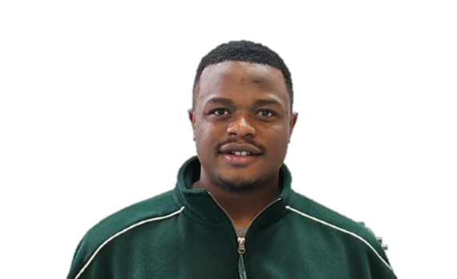

Farmland birds & agricultural change
Organic and conventional farming, pesticides, environmental gradients and ecological consequences for birds and their associated organisms.
PhD Researcher in Population Biology & Ecology
La Rochelle University · Centre d'Études Biologiques de Chizé (CEBC–CNRS), France
I study how environmental change shapes avian biodiversity, host–parasite interactions and wildlife health, with research experience in Europe and Central Africa.
View publicationsORCID ↗
I am a doctoral researcher at La Rochelle University and CEBC–CNRS. My work lies at the intersection of avian ecology, parasitology and environmental change. I am particularly interested in how agricultural practices and other human-driven environmental changes influence parasite communities, infection dynamics and bird populations, including implications for zoonotic risks.
My wider experience includes behavioural ecology, avian malaria, Afrotropical bird diversity, urban biodiversity and conservation research in Cameroon.
Organic and conventional farming, pesticides, environmental gradients and ecological consequences for birds and their associated organisms.
Avian ectoparasites, intestinal parasites, blood parasites and potentially pathogenic fungi, with an interest in transmission ecology.
Bird assemblages in agricultural, tropical and urban landscapes, including university green spaces and protected areas in Cameroon.
Parasite impacts on plumage coloration and condition, and plastic responses of avian malaria parasites to environmental cues.
La Rochelle University · Centre d'Études Biologiques de Chizé (CEBC–CNRS), France
Track: Integrative Biology of Interactions · University of Montpellier, France
University of Yaoundé I, Cameroon
University of Yaoundé I, Cameroon
Supervisors: Ana Rivero, Claire Loiseau, Arnaud Berthomieu. Collaboration with Frédéric Angelier (CEBC) for corticosterone assays.
Investigated the effects of host environmental stress on gametocyte production and sex ratio in Plasmodium relictum (SGS1 lineage), using domestic canaries (Serinus canaria) as a study model.
Supervisors: Claire Doutrelant, Claire Loiseau, Amélie Fargevieille, Lisa Sandmeyer.
Studied the influence of blood-feeding Protocalliphora ectoparasites on condition and plumage coloration of blue tits (Cyanistes caeruleus) in Corsican populations.
Supervisors: Sévilor Kekeunou and Eric Moïse Bakwo Fils. Support: IDEA WILD equipment grant (USD 560).
Investigated niche overlap between bats and birds in the Lake Ossa Wildlife Reserve, Cameroon.
Listed by publication year; Christian N. Tchana's name is highlighted. All titles link to the published articles via DOI.
Poster: Rôle de l’agriculture biologique et de l’agriculture conventionnelle sur la flore fongique chez les passereaux spécialistes du milieu agricole.
Best Poster Award. Co-authors: K. Monceau, B. Defaye, C. Gautier, C. Imbert, L. Delhaes and J. Moreau.
Member of the organising committee for GFP 2026 (La Rochelle University / CEBC Chizé).
Talk: Nest-dwelling ectoparasites and bird plumage coloration: direct and indirect long-term effects. Webinar series ↗
Oral presentation: Assessing bat and bird diversity in the Lake Ossa Wildlife Reserve (Littoral, Cameroon). Co-authors: E. M. Bakwo-Fils, J. M. Takuo, P. J. Atagana and S. Kekeunou.
R, generalized linear (mixed) models, biodiversity metrics, multivariate community analyses and reproducible workflows.
Mist-netting and bird monitoring, ecological sampling, QGIS, landscape metrics and mapping.
La Rochelle University · Centre d'Études Biologiques de Chizé (CEBC–CNRS), France
ORCID: 0009-0006-7084-1261 ↗ · GitHub ↗
Names and institutional affiliations are provided for reference; contact details are not published here.